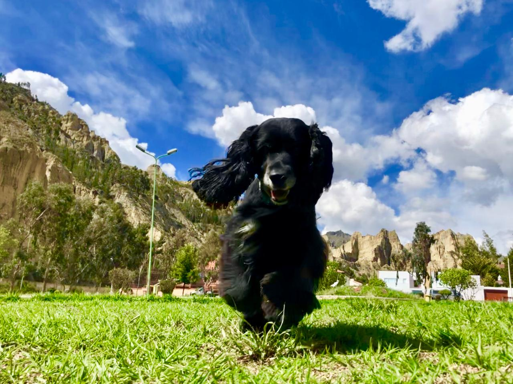
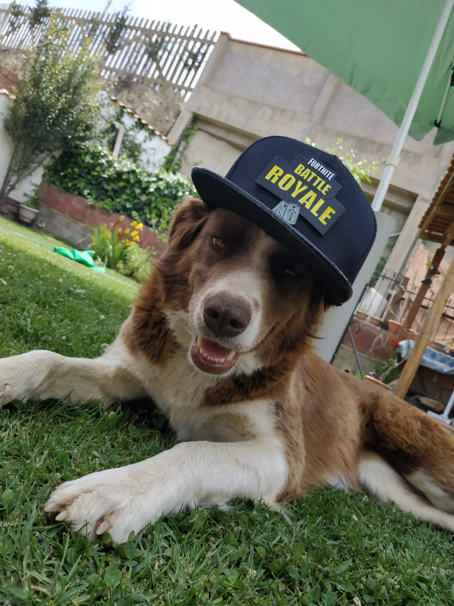

-
Oficiales
No Oficiales

Kafka
-Mascota de mi abuela, incluso si no era del todo nuestro, siempre lo visitabamos, paseabamos, dormiamos y jugabamos.
Manchas
-Mascota de mis padres y mi hermano mayor. Se llamaba manchas por su pelaje cubierto de manchas cafes, un atrevido y un tanto agresivo al jugar.

Alejandra
-Mascota rescatada de las calles por un vecino(lo apodamos arquitecto), Y tiene muchos animales rescatados. Ale se encariño mucho con nosotros y se vino a vivir con nosotros.
-Digamos que fue ella quien nos adopto y al vecino no le importo, se alegró.